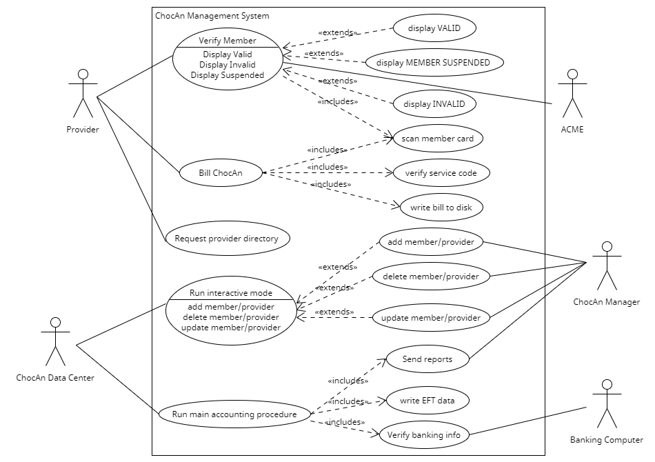

Use Case Descriptions
Use Case: Verify member
Context: A member intends to receive services from ChocAn and must be validated.
Actors: Provider, ChocAn Data Center, ACME
Main Success Scenario:
1. When a member wants to receive health care services, they first go to the ChocAn center.
2. Then, the member needs to go up to a provider and be verified as a good-status member.
3. The member hands his or her card to the provider.
4. The provider slides the card through the card reader on the terminal, to read the magnetic strip that encodes the member’s name and nine-digit member number.
5. The terminal dials to the ChocAn Data Center.
6. The ChocAn Data Center computer verifies the member number.
6.1 If number is valid, the word VALIDATED appears on the one-line display.
7. The provider hands the card back to the member.
8. The member can now receive a health care service from that provider.
Extensions:
6a. The member number is not valid.
6a.1. The ChocAn Data Center sends to the computer terminal that the member cannot be verified.
6a.2. The computer terminal displays the reason for the provider either as INVALID NUMBER or MEMBER SUSPENDED.
6a.3. The provider informs the member that verification did not go through and the reason.
6a.3a. If it is MEMBER SUSPENDED, the member can choose to pay off the owed membership fees, which would send that information to ACME to update the record of fees. Then, ACME would reinstate them as a regular member and they would be validated.
6a.3b. If it is INVALID NUMBER, the member should go through the process of becoming an active member and receive another card.
Use Case: Bill ChocAn
Context: The provider needs to bill ChocAn after a health care service has been provided to the member.
Actors: Provider
Main Success Scenario:
1. The provider passes the member card through the card reader or keys in the member number to the computer terminal.
2. When VALIDATED is displayed, the provider keys in the date the service was provided in the format MM-DD-YYYY.
3. The provider uses the Provider Directory to look up the appropriate six-digit service code corresponding to the service provided.
4. The provider keys in the service code.
5. The software displays the name of the service corresponding to the code and asks the provider to verify that it is the correct service.
6. The provider can enter comments about the service provided.
7. The software now writes a record to disk.
7.1 Writing the current data and time (MM–DD–YYYY HH:MM:SS)
7.2 Writing the date service was provided (MM-DD-YYYY)
7.3 Writing the providing number (9 digits)
7.4 Writing the member number (9 digits)
7.5 Writing the service code (6 digits)
7.6 Writing the comments (100 characters) (optional)
8. The software looks up the fee to be paid for the service and displays it on the provider’s terminal.
9. The provider needs to enter information for verification purposes.
9.1 Enter current date and time
9.2 Enter date the service was provided
9.3 Enter member name and number
9.4 Enter service code
9.5 Enter fee to be paid
10. The bill for that service has been successfully written to the ChocAn system now.
11. At the end of week, the provider totals the fees to verify the amount to be paid to that provider by ChocAn for that week.
Extensions:
5a. The provider entered a nonexistent service code.
5a.1. An error message is printed.
5a.2. The provider repeats step 4.
9a. The provider entered wrong information in the verification step.
9a.1. An error message saying “information does not match” is printed.
9a.2. The provider repeats step 9.
Use Case: Request provider directory
Context: The provider requests the list of service codes called the provider directory
Actors: Provider
Main Success Scenario:
1. A provider sends a request for the provider directory.
2. The provider directory is sent to the provider’s email as an attachment.
Use Case: Run main accounting procedure
Context: The main accounting procedure is activated to send out financial reports every week
Actors: ChocAn Data Center, ChocAn Manager, Banking Computer
Main Success Scenario:
1. At midnight on Friday, the main accounting procedure is activated.
2. Each member who has been provided a service that week is sent a report through email that includes a list of every service they received that week ordered
by the date of the service.
2a. This same report can be sent again at any time by a ChocAn Manager.
3. Each provider that provided a service that week is sent a report, through email, of the services they provided (including all information from their
provider form from billing), the total number of services they provided, and the total fees that they charged.
3a. This report is available at any time after this and can be sent by a ChocAn manager.
4. The ChocAn Manager receives a report of all of the provider reports as well as the total number providers who had consultations, the number of
appointments, and the total fees collected.
5. A record of the Electronic Funds Transfer (EFT) data is written to the disk at the ChocAn data center.
6. The EFT data is verified as accurate by the banking computer to ensure that each provider receives the correct amount of money.